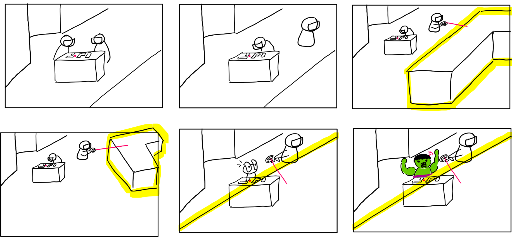
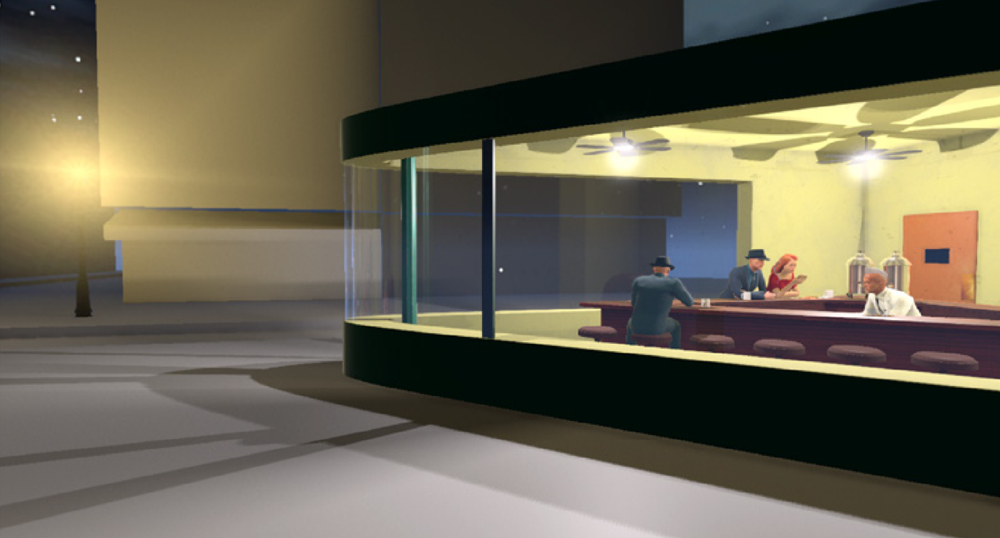
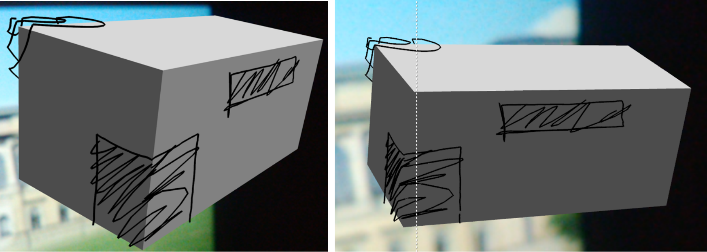
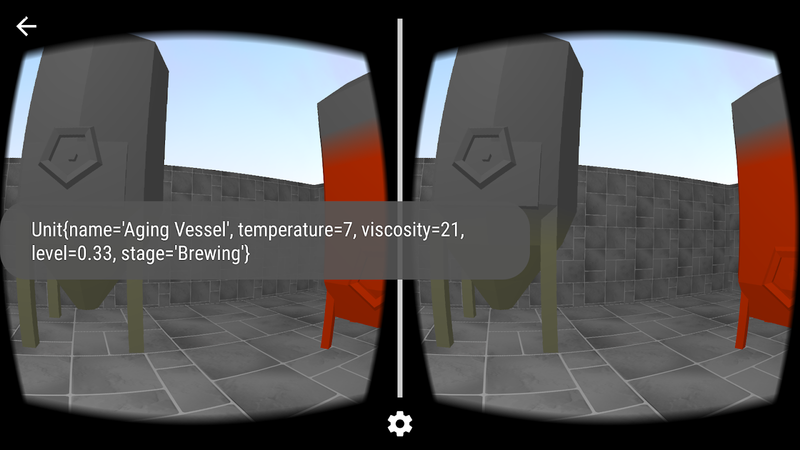
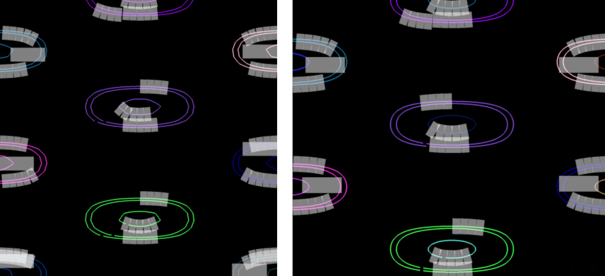
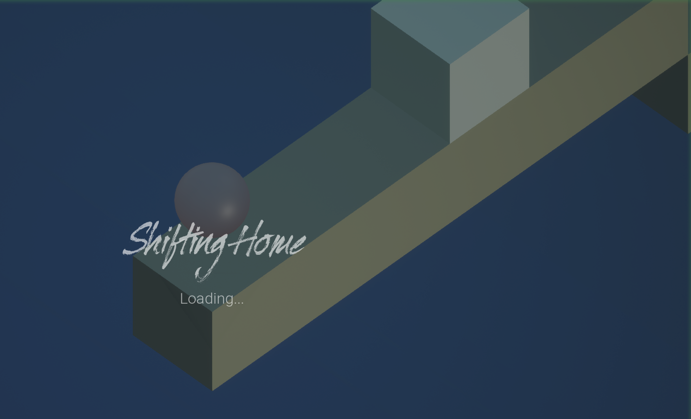
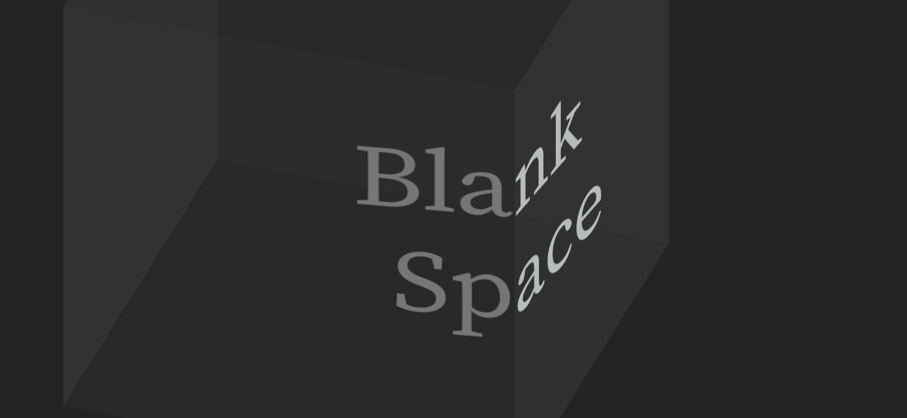
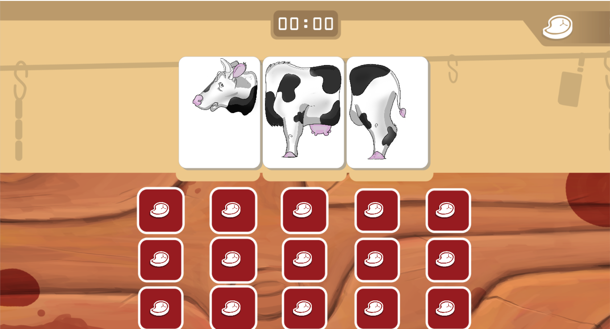
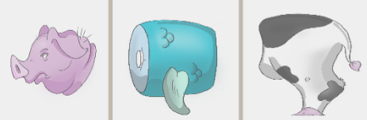

Vadym Strelchenko

8 Rathausplatz, Garching 85748, Germany
+49 177 54 55 168
e-mail, Skype: strelchenkovadym@gmail.com
[personal website; subscript: “Interactive Web version”]
JOB APPLIED FOR
Creative Coder
Vadym Strelchenko
8 Rathausplatz, Garching 85748, Germany +49 177 54 55 168 e-mail, Skype: strelchenkovadym@gmail.com [personal website; subscript: “Interactive Web version”] |
JOB APPLIED FOR Creative Coder |
PROFESSIONAL TIMELINE
11/2018 - present |
Time off, travel, personal physical and spiritual development, resume preparation |
|
05/2018 - 11/2018 |
Master’s thesis - Workspace awareness in Virtual Reality [hyperlink] |
|
10/2017 - 04/2018 |
Programmer at Motius GmbH |
|
|
10/2017 - 02/2018 |
Virtual Reality to Augmented Virtuality glasses porject [hyperlink] |
|
03/2018 - 04/2018 |
NucleAR [hyperlink] |
09/2015 - 11/2018 |
Master’s Computer Science at the Technical University of Munich |
|
?08/2014 - 07/2018 |
Back- and front-end developer at Quickblox Master’s Information technology in KNURE? |
|
09/2010 - 07/2014 |
Bachelor’s Computer Science at the Kharkiv National University of Radio-electronics |
|
SKILLS
Graphics Programming
Specialty: |
Low- and high-level graphics programming, VR, AR |
Tools & Tech: |
Unity3d, SteamVR, GoogleVR, Vuforia, OpenGL, OpenGL ES, GLSL |
Overview: |
|
General Programming
Specialty: |
General and web-development |
Tools & Tech: |
Git, Android, C#, C++, Java SE, EE, HTML, CSS, JavaScript |
Overview: |
|
Graphics Suites
Specialty: |
2D, 3D, video edit |
Tools: |
Blender, Zbrush, Adobe Photoshop, Illustrator, After Effects |
Overview: |
|
Languages
English |
Full professional capacity; IELTS 7.5 (2015); English university program since |
German |
Limited professional capacity; B2; good vocal understanding and personal communication |
Ukrainian, Russian |
Native |
COVER LETTER
Dear ------,
I found the job listing for creative coders by a lucky coincidence when considering opportunities as a game developer in London. However, ever since, my conviction that this is the right kind of job for me has only grown. I believe that my experience with different aspects of computer graphics programming will help you tackle all the various technical challenges concerning visualization and animation.
3 years ago, with the beginning of my studies at the Technical University of Munich, I changed my specialization from web development to graphics programming in order to incorporate my personal interest towards CG in my professional life. Ever since, I managed to try myself in low- and high-level CG programming, and finished several Mixed Reality projects. I have to admit, the most interesting projects for me personally, were the once where got to implement my artistic vision for the project and incorporate my skills with different graphics and modeling suites, with one of the most exiting projects to date being a Virtual Reality interpretation of a drawing by Edward Hoper, Nighthawks in 3D. Finally, I have experience with keyframe animation due to studies of Blender and After Effects, and some basic experience with AnimatiI posses the knowledge about the approach to animation with keyframes, as well as some basic animation experience in Unity3d.
Having always considered game development the main option, which would allow me to combine my programming skills and the passion for all the things CG, I was delighted to find an opening for a coder at a creative studio. If I had to imagine myself in 5 to 10 years, I would be involved in or curating projects along the lines of digital storytelling, be it games or interactive experiences. I believe that there could be no better place for me to hone my skills for that than at a cretive studio, because you do exactly that - you tell a story, visual or aural, an emotional story of a brand, you communicate the idea by arising feelings in the viewer. And that is what excites me.
To conclude, procedural animation might be my strongest point yet, but the up-to-date experience I have with programming CG will allow for an easy adoption of the skill. I believe that our collaboration would be a mutually beneficial one - you get a developer who is passionate about CG and has an outlook that goes beyond the edges of a code editor window, and I, on the other hand, get to apply my skills and develop in the desired direction, learning from our experience.
Kind regards,
Vadym Strelchenko.
P.S. - 7-21 April, I will be visiting a friend in London, and would be glad to further discuss our partnership.
PORTFOLIO
Workspace awareness in Virtual Reality: Digital collaboration in urban planning phases, Master’s Thesis, 7 month (30 ECTS) + [Git link]
[TODO: for web version, gif||video instead of screenshots]
Tags: Unity3d, Git, Oculus Rift, HTC Vive, Blender, Adobe Photoshop
In this study I explored the awareness people have of one another in VR environments when performing their individual, architectural design-related tasks. This project allowed me to deepen my knowledge of Unity3d and VR development in the engine. After 5 studies and around thirty participants, I concluded that audio feedback is an invaluable tool in such environment that enhances workspace awareness considerably both in combination with visual cues and by itself.
Pictorial Space 2.0 // Artwork retold (https://tinyurl.com/yalb9sfy), 6 month (5 ECTS) [TODO: transform to web]

Tags:
Unity3d, Git, Oculus Rift, Blender, Substance Painter, Adobe
Photoshop
Together with an urban design student we worked on a semester long Interactive Visualization project, where we aimed to bring Nighthawks by Edrawrd Hopper to life in VR. This where I first learned how to develop for VR and got a chance to try out my skills in Unity3d and Blender. Additionally, this was my main encounter with Substance Painter, as the tool was extensively used for the interior texturing.
The final presentation for the project can be found at: [presentation link]
A freehand sketch tool for conceptual urban design in an augmented reality application (as a part of CDP project: http://cdp.ai.ar.tum.de/), 1.5 years (16 ECTS)
Tags: Android Studio, MetaIO SDK, AR, Git, Blender, Adobe Photoshop
As a part of an interdisciplinary project, I was tasked with implementing 3D sketching capabilities for an Android AR application. The drawings had to be projected on a 3D object, so that when it is manipulated the drawings remain “stuck”. Much of this project was porting the legacy Eclipse code to Android Studio and wrestling with a deprecated MetaIO SDK, whoever in the end I got a chance to hone my Android skills, both SDK and NDK, solve different projection-related mathematical problems, and get some further insights into AR.
Real-time Visualization of Machine Data via Google Cardboard SDK (https://tinyurl.com/ybs9uz2t) 6 month (10 ECTS) [?TODO: transform to web]
[OpenGL: tinyurl.com/v1opengl -- LINK INACTIVE...(*apk, 4.5MB)]
Tags: OpenGL ES, GLSL, GoogleVR, Android Studio, Git, Blender
During an Android practicum, where I got first introduced to VR and Android development, in a team of two, we got tasked to explore the feasibility of using mobile VR for presentation requirements of the customer. My teammate investigated an approach with Unity3d, and I got to apply my self-acquired OpenGL skills and tried to tackle the problem with a native OpenGL ES solution. While we found Unity solution preferable for customer’s needs, I got to dive into peculiarities of low-level graphics development for mobile and a first real chance to test my graphics programming skills.
GPU-based label placement for contour lines on meteorological maps (https://tinyurl.com/y85v7a5t) [<-]
Tags: OpenGL, GLSL, C++, Visual Studio
A second chance to improve my OpenGL proficiency came with a guided research on label placement. Here, I tested both geometry and compute shaders to see which approach yields better rendering times, and deepened the understanding of programming the rendering pipeline.
Shifting home, 2 days (Global Game Jam 2019)
Tags: Blender3d, Adobe Illustrator, Adobe Photoshop, Unreal Engine 4
My first introduction to the Unreal happened during the Global Game Jam 2019. Even though, for this project I took on a role of a lead artist, it was very exciting to gain a new perspective on game development through a new engine, as my previous experience was exclusively through Unity.
The game can be played at: [TODO: transform to web]
Blank Space 2 days (Game Jam)
Tags: Unity3d, Blender
In this jam, with the topic “Invisible”, I got to prototype an idea I had for quite some time – drawing on invisible 3D objects and letting players guess what shape it was. In a team of 2 programmers, we transformed the initial idea into a game concept and by the end of two days had a playable prototype: [TODO: transform to web]
Meetory, 2 days (Game Jam)
Tags: Unity3d
Working in a team with a talented artist and a novice programmer, we created a memory game with a twist. In order to save animals from slaughter and clear the board, you have to combine the correct animal parts, which goes horribly wrong sometimes...

The
game can be found at: [TODO: transform to web]
+ different body parts screenshot +
maybe make highscore go down
NucleAR ?